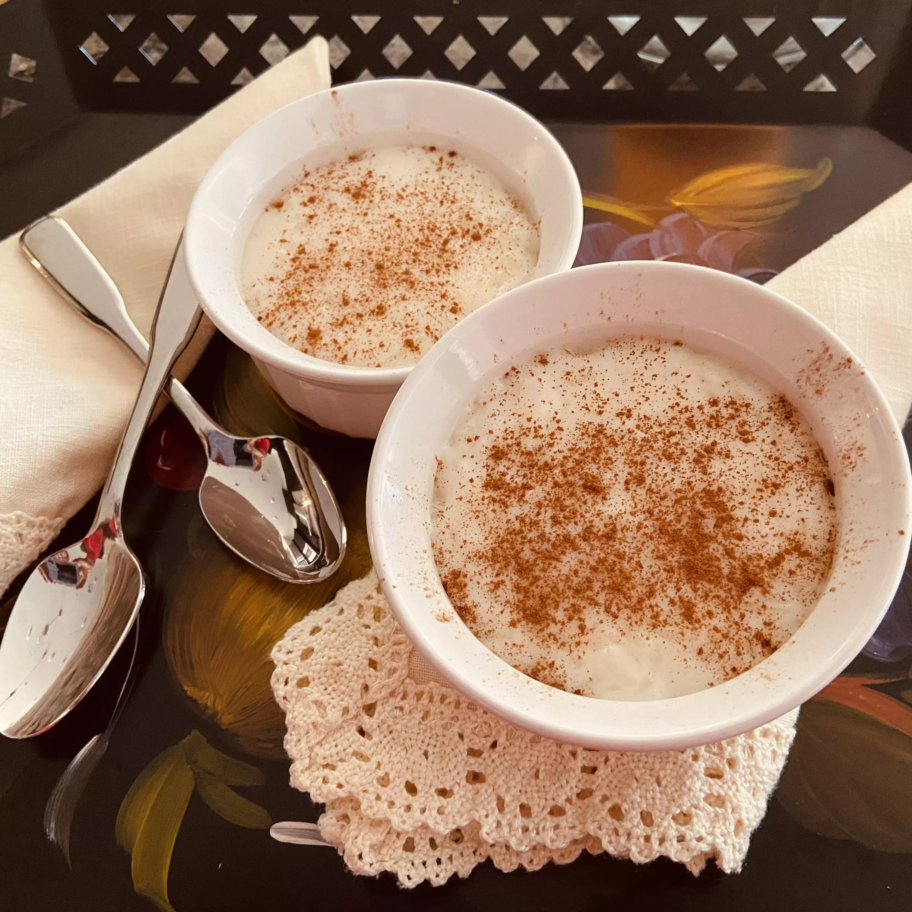

Rizogalo(Greek Rice Pudding)

Greek rice pudding is simple, comforting, and delicious. Some people in Greece make it with eggs, but my aunt prefers without. Best enjoyed cold - if you can wait that long!
Prep Time: 5 mins
Cook Time: 40 mins
Additional Time: 4 hrs
Total Time: 4 hrs 45 mins
Servings: 6
Yield: 6 servings
Ingredients
- 2 cups water
- ½ cup uncooked short-grain white rice
- 2 cups whole milk
- 4 tablespoons white sugar
- ½ cup whole milk
- 4 tablespoons cornstarch
- 1 teaspoon vanilla extract
- ¼ teaspoon ground cinnamon, or more to taste
Directions
- Bring water and rice to a boil in a saucepan. Immediately reduce heat to medium-low. Simmer uncovered very slowly, stirring occasionally, until most of the water has been absorbed and rice is soft, about 30 minutes.
- Pour 2 cups milk and sugar into the saucepan and increase heat to high.
- Meanwhile, stir together 1/2 cup milk and cornstarch in a bowl.
- Once rice-milk mixture is boiling, add cornstarch mixture and vanilla extract. Stir until well combined. Remove from heat.
- Ladle rice pudding into individual serving dishes and sprinkle with cinnamon. Allow to cool to room temperature. Refrigerate until well chilled, at least 4 hours.